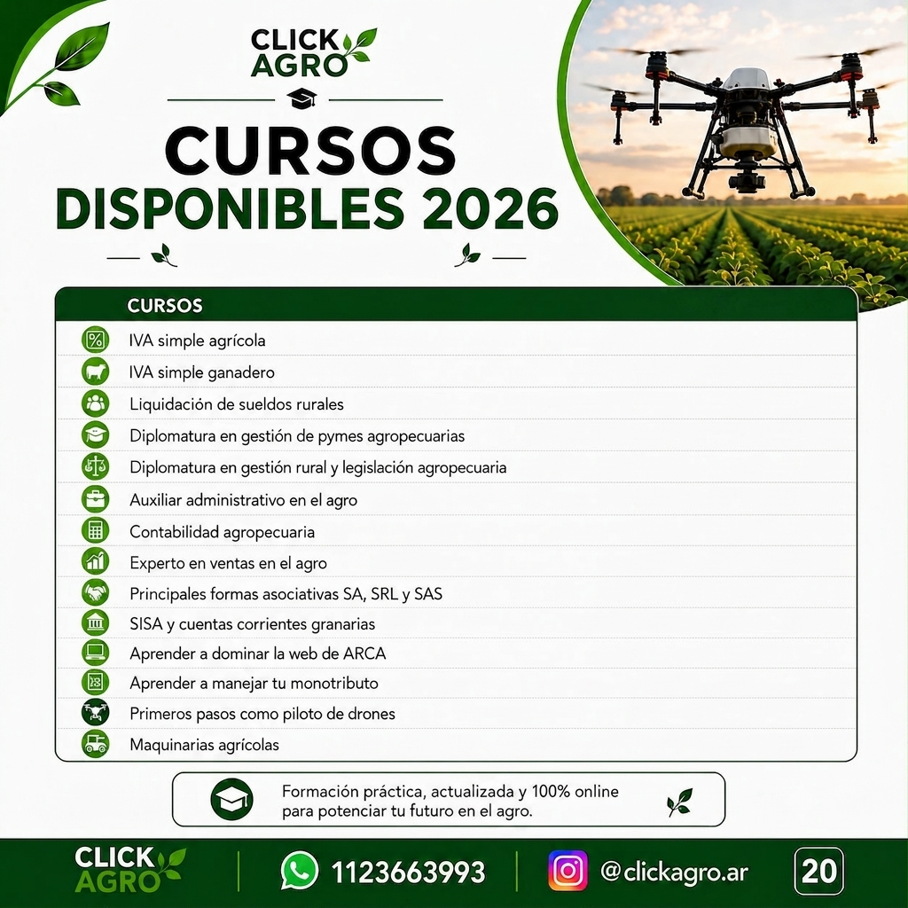

Capacitación para Productores Agropecuarios
Para ordenar números, documentación, inversiones y decisiones de campaña.
En la Academia de Educación de Click Agro acercamos herramientas concretas para mejorar la gestión, la administración, la documentación, el financiamiento y la toma de decisiones en el campo.
Capacitaciones claras, directas y pensadas para aplicar desde el primer día.
¿Para quién es?
Para ordenar números, documentación, inversiones y decisiones de campaña.
Para profesionalizar la gestión, calcular costos y mejorar la rentabilidad.
Para capacitar personal, representantes y colaboradores del sector.

Lenguaje simple, ejemplos reales del sector agropecuario, material de apoyo y orientación para tomar mejores decisiones.
Escribinos y te enviamos información sobre cursos disponibles, fechas, modalidad y propuestas para productores, contratistas, empresas y representantes regionales.
Escribir a Click Agro por WhatsApp